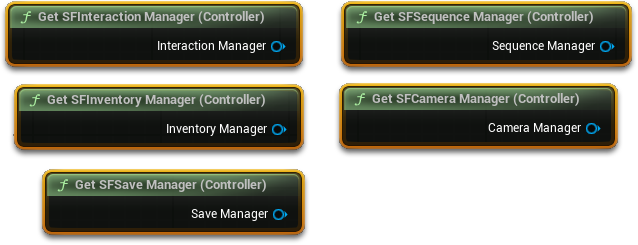
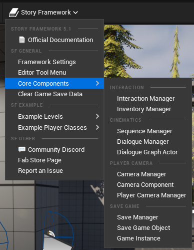

核心概念：五分钟看懂 SF 的骨架
为什么 SF 把功能拆成五个组件？你该在哪里写自己的逻辑？这一章解释框架的设计哲学、如何在任意蓝图里拿到管理器，以及读文档必须懂的十几个虚幻术语。
如果你只读一章，请读这一章。SF 的官方文档之所以让人看不懂，很大原因是它假设你已经知道框架是怎么组织的。 这里先把这个组织方式讲清楚，后面所有章节都会变得顺理成章。
一个核心设计：不在玩家蓝图里写逻辑
大多数虚幻教程会教你：把交互、背包、血量这些逻辑，统统写在玩家角色蓝图（Player Character）或玩家控制器蓝图（Player Controller）的事件图表里。 这样能跑，但会迅速变成一坨几千个节点的蜘蛛网。
SF 走的是另一条路：
把每个“功能领域”封装成一个 Actor Component（Actor 组件），挂到玩家控制器上。 玩家控制器里只保留输入事件（按键 → 调用哪个组件）， 其余 95% 的逻辑都在组件内部。这样你改背包不会碰到对话，改相机不会碰到存档。
这五个组件就是全部家当：
五个管理器分别管什么
| 组件（类名） | 负责 | 你会在什么时候碰它 |
|---|---|---|
SFInteractionManager_AC |
发射交互射线、显示提示、执行五种交互方式、QTE、进度动作 | 做任何“能按 E 的东西”时 |
SFInventoryManager_AC |
快捷背包、道具组合、日志、回忆录、任务队列 | 加道具、发任务、解锁日志时 |
SFCameraManager_AC |
第一/第三人称预设、视角灵敏度、锁定目标 | 改视角、做镜头演出时 |
SFSequenceManager_AC |
播放关卡序列、字幕语音、故事选择 | 做过场、语音、重大抉择时 |
SFSaveManager_AC |
存档、自动存档、读档 | 做存档点、保存自定义进度时 |
_AC 是 Actor Component 的缩写。官方文档在「交互系统」页面把
SFInteractionManager_AC 简写成 SFInteraction_AC，指的是同一个东西。
记不住全名没关系：在任意蓝图里右键搜「Interaction Manager」，或在组件面板搜 SF，都能找到它们。
最重要的一个技能：拿到管理器
SF 提供了引用函数库，让你在任何蓝图（关卡蓝图、道具蓝图、UI 蓝图）里一句话拿到组件，不需要 Cast、不需要拖引用。
- 在任意蓝图的事件图表里右键 搜索「Interaction Manager」「Inventory Manager」「Camera Manager」「Sequence Manager」「Save Manager」中的任意一个。
-
选择一个返回值为组件的节点
例如
Get SF Interaction Manager，把它拖出来。 -
从它的输出引脚继续拖，搜索你要的函数
例如
Add Item to Inventory、Add Main Task to Queue。

官方文档里凡是写「using a reference to the Inventory Manager」的地方，意思就是： 先拿到 Inventory Manager 引用，再调用后面这个函数。 你只要记住这个套路，剩下的就是查函数名。
什么是“可交互物体”（Interactable）
SF 里所有能被玩家操作的东西，都满足两个条件之一：
- 继承自
InteractableBase_BP——最简单，已经带好了网格组件、碰撞、交互数据结构和提示逻辑。 - 自己实现
SFInteraction_BPI蓝图接口——适合你已有的自定义 Actor（比如你自己写的门、电梯）。实现后它就“注册”成了一个可交互物。
每个可交互物身上都有一个结构体变量 InteractableData_S，里面塞着它能用哪种交互方式、叫什么名字、图标是什么、能不能组合……
你 90% 的配置工作，就是填这个结构体。
SFV：一个装满开关的数据资产
StoryFrameworkValues（简称 SFV）是一个数据资产（Data Asset），里面集中了相机、背包、UI、对话、任务的全局配置。
你在官方节点名里看到的 “SFV” 就是它。
打开方式有三种，任选：
- 内容浏览器搜索
StoryFrameworkValues； - 装了快捷工具栏后：顶部菜单
Story Framework → Framework Settings； - 从
SFGameInstance_BP里引用（5.1 起 SFV 移到了 GameInstance，保证不依赖玩家控制器是否存在）。
官方明确说：细节面板里暴露了很多值，但只有一部分是给你改的。 不确定的项先别动；改之前记下原值。SFV 影响全局，改坏了所有关卡一起坏。
输入：为什么打开背包后按键就变了
SF 用「输入映射上下文（IMC）」来切换操作方案：
| IMC | 什么时候生效 | 管什么 |
|---|---|---|
SFGameplay_IMC | 正常游玩 | 移动、视角、交互、打开背包 |
Inventory_IMC | 背包/菜单打开时 | 导航、使用、组合、关闭 |
WidgetMenu_IMC | 全屏菜单/弹窗 | 菜单导航 |
这样设计的好处是：同一个键在不同界面下有不同含义，且不会误触发。
你要加自己的操作（比如“按 Q 扔石头”），正确做法是：新建 Input Action → 在 SFGameplay_IMC 里绑定 → 在玩家控制器里接事件 → 调组件函数。
蓝图里的颜色暗号
SF 的部分蓝图用橙色标记图表或注释块，意思是「这里是为了演示效果，你可以删掉或禁用」。 黑色的注释块是核心功能，动之前要小心（例外：播放音效相关的逻辑通常可以随意改）。 看到橙色，就放心大胆地改。
编辑器工具：让配置不那么痛苦
可交互物的数据都塞在结构体里，在细节面板里折叠得很深。SF 提供了一个编辑器实用工具（Editor Utility Widget） SFEditor，
把这些字段按类别铺开，改起来直观得多。它还能存相机变换信息、批量检查关卡里的交互物。
启用方式（可选，但强烈推荐）：
-
启用 Python 插件
打开
Project Settings → Plugins → Python，确认 Python Editor Script Plugin 已启用。 -
添加启动脚本
在同一页面的
Startup Scripts下新增一条，粘贴作者提供的脚本（官方文档里给了 pastebin 链接）。 -
重启编辑器
顶部工具栏（PIE 按钮旁边）会出现
Story Framework下拉菜单，里面就是Framework Settings和各种快捷入口。

这个工具栏纯属锦上添花。所有功能都能通过内容浏览器手动找到，只是要多点几下。 如果你在迁移到自己的工程，这段脚本在迁移完成后再加，避免路径错乱。
附：读文档必须懂的 10 个虚幻术语
下面这些词，官方文档里出现时不会解释，但对新手是硬门槛。每个都配了「在 SF 里对应什么」。
| 术语 | 一句话解释 | 在 SF 里 |
|---|---|---|
| Actor | 能放进关卡里的东西，有位置、有旋转。角色、门、灯、触发器都是 Actor。 | 每一个可交互物、每一个 NPC 都是 Actor |
| Component （Actor Component） |
挂在 Actor 身上的“插件”，给 Actor 增加能力。一个 Actor 可以挂很多个。 | 五大管理器就是挂在玩家控制器上的组件 |
| Blueprint Interface （BPI，蓝图接口） |
一份“函数名单”，任何类实现它就必须提供这些函数。用来让不同的类被统一调用。 | SFInteraction_BPI（交互）、SFPlayerControllerData_BPI（提供组件引用） |
| Structure （结构体，_S 结尾） |
一组打包的数据，像一张表单。可以整体传递。 | InteractableData_S（交互配置）、TaskInfo_S（任务信息） |
| Enum （枚举） |
只能从固定几个选项里选一个的变量。 | 交互方式、检视方式、相机预设都是枚举 |
| Data Table （数据表） |
类似 Excel 的表格资产，一行一条数据。改内容不用改蓝图。 | 道具组合、回忆录、NPC 叫声、按键样式 |
| Data Asset （数据资产） |
只存数据、不存逻辑的资产文件。 | StoryFrameworkValues（SFV） |
| Event Dispatcher （事件分发器） |
“广播”。组件喊一声，任何绑定了的蓝图都会收到，不用互相知道对方存在。 | OnPerformActionFinished、OnStoryChoiceChosen 等 |
| Input Action / IMC | UE5 增强输入：动作（做什么）+ 上下文（什么时候生效）。 | SFGameplay_IMC 等 |
| Game Instance | 贯穿整个游戏进程、切关卡也不会销毁的对象。 | SFGameInstance_BP，存 SFV 引用与存档逻辑 |
骨架讲完了。接下来进入第一个实战系统：交互。